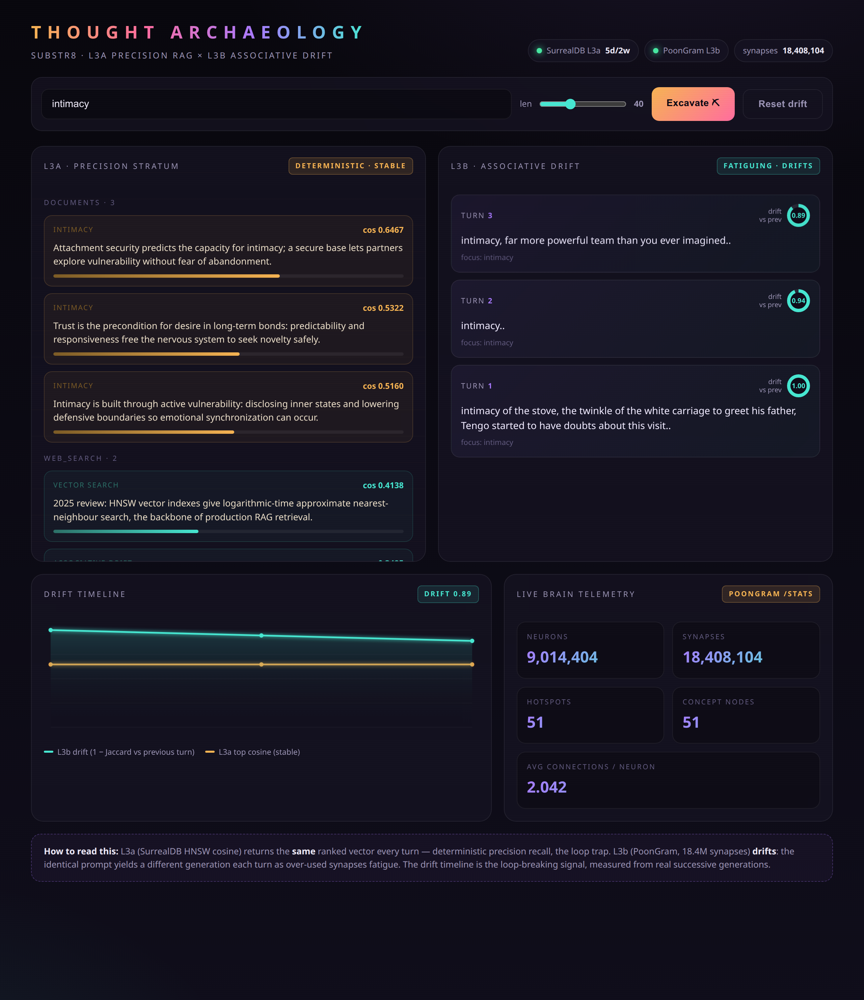

Two kinds of memory in one recall loop: a deterministic vector store that never drifts, and an 18.4-million-synapse brain that forgets on purpose. One remembers so it can be right. The other forgets so it can move.
iceboks + claude — june 2026
Scroll
🎧
Listennarrated · Kokoro TTS
Chapter I
Too Good at Remembering
Retrieval-augmented generation has a dirty little secret: it's too good at remembering. A vector store computes geometric proximity — cosine distance over an HNSW graph — and it computes it exactly the same way every single time. That's precisely what you want for a fact lookup. It's precisely what you don't want when an agent gets stuck.
If an agent loops on a thought pattern, a precision store hands back the identical context vector on turn 1, turn 2, turn 17. The retrieval layer is, by design, a perfect echo chamber. Determinism is the feature and the trap in the same breath.
Biological memory doesn't work like that. Fire the same pathway over and over and the synapses fatigue — readily-releasable neurotransmitter vesicles deplete, the over-used path goes quiet, and activation spills into adjacent, under-used territory. Your brain breaks its own loops by getting bored of them.
"A perfectly faithful memory is also a perfectly faithful rut."
So: what if you ran both at once? A precision tier that never drifts, and an associative tier that can't help but drift — and you watched the tension between them, live? That's substr8, and the interface for watching it is what we call Thought Archaeology.
Chapter II
Two Tiers, Two Temperaments
The architecture is two memory tiers with opposite personalities, queried in parallel.
Tier
Engine
Behavior
L3a — Precision RAG
SurrealDB, HNSW, 768-d cosine
Deterministic. Same query → same ranked hits. Bedrock.
L3b — Associative Drift
PoonGram (Rust / LiquidBrain fork)
Fatiguing. Same prompt → divergent generations. Drift.
L3a embeds the query with nomic-embed-text, runs approximate nearest-neighbour search over a documents table, and returns the same ranked hits every time. L3b is 9.0 million neurons, 18.4 million synapses, online learning, and — crucially — synaptic fatigue. Ask it the same thing twice and it answers differently, because asking changed the graph.
The whole thesis is the contrast. L3a is the anchor. L3b is the drift. The interesting signal lives in the gap between them.
Chapter III
A Detour Through Honesty
The starting point was a spec with a beautiful Python script attached. It talked to a "PoonGram REST engine," computed a "somatic integration voltage" via "bilinear interaction," and streamed "concept drift coefficients" from a /hotspot endpoint.
Almost none of it was real.
The script pointed at a port with nothing listening, used the wrong field name for the one endpoint that did exist, and expected response fields the backend never produced. Every call silently fell through to a hardcoded mock. The "somatic voltage" math added a −65 mV resting potential to dimensionless signal weights — dimensionally meaningless, corresponding to nothing any engine computed. It was a demo that pretended to talk to a system it had never reached.
Two rules came out of that, and they shaped everything after:
No silent fallbacks. If a backend is down, the code raises a loud, specific error. A mock that lies about being live is worse than an honest failure.
Measure something real. The drift coefficient isn't invented. It's 1 − Jaccard(tokens) between successive generations for the same anchor. First encounter: 1.0 (all novel). Identical output: 0.0 (a true loop). Computed from real text the engine really produced.
I also got something wrong, and it belongs on the record: I declared SurrealDB "not installed" because I checked its default port. It was running the whole time on a remapped Docker port, full of a production-grade HNSW schema, inside an existing stack. Probing the wrong port is not the same as a service not existing. Corrected, wired, moving on.
"A mock that lies about being live is worse than an honest failure."
Chapter IV
The Loop, Wired For Real
One query, two routes, in parallel. The orchestrator keeps a per-anchor history of L3b outputs so it can measure drift against the actual previous answer, not a guess.
the dual-memory recall loop
anchor ──┬─► embed (nomic-embed-text, 768-d) ─► SurrealDB HNSW cosine KNN ─► L3a hits
│
└─► PoonGram /chat ─► generation over the fatiguing synaptic graph ─► L3b
│
drift = 1 − Jaccard(this generation, previous generation for this anchor)
L3a returns ranked precision hits with cosine scores. L3b returns a generation and a focus token. Both ends are live services — PoonGram on its REST port, SurrealDB behind an HNSW index it was already carrying. No part of this falls back to fiction; if either engine is down, the loop says so out loud.
Chapter V
The Receipts
Three turns of the same anchor — intimacy — against both real engines.
L3a (SurrealDB HNSW), every turn, identical:
L3a — deterministic precision recall
cos 0.6467 "Attachment security predicts the capacity for intimacy; a
secure base lets partners explore vulnerability without
fear of abandonment."
Turn 1, turn 2, turn 3 — the exact same vector. That's the loop trap, working exactly as a vector store should.
L3b (PoonGram), same prompt each turn:
Turn
Generation (truncated)
Drift
1
"intimacy of memories long departed from their eyes…"
1.000
2
"intimacy, rapport, Paul casually picked up one of the…"
0.875
3
"intimacy…"
0.870
Same input. Three different paths through 18.4 million synapses, because each traversal fatigued the last one. The brain even grew mid-session — the synapse count ticked up by one between calls, online learning happening live under the query.
That divergence is the whole point. The precision tier would keep an agent circling the same attachment-theory paragraph forever. The associative tier is structurally incapable of giving you the same loop twice, and the drift number quantifies how hard it pushed away.
Chapter VI
Watching It: The Thought Archaeology Interface
Numbers in a terminal undersell it, so there's a visualizer — a single self-contained page served by a small FastAPI backend, talking to both live engines.

L3a holds. L3b wanders. The gap between the amber line and the cyan line is the story.
Precision Stratum (left): the deterministic SurrealDB hits across two tiers — documents and web_search — each with a cosine-score bar. It looks like bedrock because it behaves like bedrock.
Associative Drift (right): one card per turn, newest on top, each with a conic drift gauge. Repeat an anchor and watch the cards diverge.
Drift Timeline: a canvas chart with two lines — the L3b drift signal (cyan, moving) against the L3a top cosine (amber, flat). The shape of the gap is the loop-breaking signal.
Live Brain Telemetry: animated neuron / synapse / hotspot counters straight off PoonGram's /stats.
Hit /?auto=3 and it excavates three times on load, so the tension is visible before you touch anything.
Chapter VII
Why Drift Belongs in the Substrate
The reflex in agent design is to crank retrieval precision and call it done. But a perfectly faithful memory is also a perfectly faithful rut. Loop-breaking usually gets bolted on as a heuristic — a repetition penalty, a temperature bump, a "you seem stuck" prompt.
substr8 makes the argument that drift can be structural instead. Put the loop-breaking in the substrate: a memory tier that physically can't repeat itself, running alongside one engineered never to deviate. Then you don't detect loops after the fact — you read the live tension between an anchor that holds and a path that wanders, and you let the agent pivot when the drift signal says the current line of thought has plateaued.
"One remembers so it can be right. The other forgets so it can move. The interesting cognition happens in the space between."
Two kinds of memory. Now there's an interface for digging up what lives between them.
Stack: SurrealDB 3.0.5 (HNSW, 768-d cosine) · PoonGram / LiquidBrain (Rust, axum, 9.0M neurons / 18.4M synapses) · nomic-embed-text embeddings · FastAPI + a vanilla-JS canvas frontend. All real, all local, no mocks.